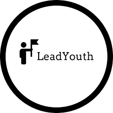

Technical Experience
LeadYouth
02/2025 - Present (Upcoming Internship) | Remote
At LeadYouth, I will be developing an AI-driven mobile app aimed at enhancing leadership training for youth. This project involves integrating AI models to support features such as personality development, leadership simulations, and speech training. Over four months, I will design, develop, and test the app, ensuring it aligns with LeadYouth’s mission. Additionally, I will gather user feedback to refine the app’s functionality and engagement. This role allows me to combine my technical expertise in AI and mobile development with leadership and communication skills to create an impactful learning tool.
Tag-N-Trac
06/2024 - 08/2024 | San Diego, CA

At Tag-N-Trac, I developed an AI assistant using OpenAI's Assistant API to enable natural language queries on the company dashboard. This improved user experience by making data retrieval and analysis more intuitive. I also integrated backend systems with API endpoints to track asset lifecycles, retrieve sensor data, manage alerts, and generate reports, streamlining logistics and monitoring processes.
Hermes Epitek
07/2023 - 08/2023 | Hsinchu, Taiwan

I built a dynamic web application that visualized historical factory alarm data using JavaScript, Chart.js, and MySQL, enabling users to analyze trends through interactive graphs. By implementing API integration, I optimized data filtering and extraction, improving the accuracy and accessibility of operational insights for manufacturing decision-making.
ERSP Software Researcher
09/2023 - 06/2024 | San Diego, CA

I worked on "Proofessor," an AI tutor leveraging GPT-4 to assist students in writing mathematical proofs. Using Python, prompt engineering, and OpenAI’s API, I designed interactive tutoring sessions that provided structured feedback. Additionally, I integrated Lean 4 for auto-formalization, enhancing proof validation and student learning outcomes.
Computer Science Tutor
09/2023 - 12/2023, San Diego, CA

I led lab sessions for 80 students in CSE 15L (Software Tools & Techniques Lab), teaching Linux OS, Vim, shell scripting, JUnit testing, and Git version control. I provided hands-on guidance, helping students build foundational software development skills.